這天收到了桃園市政府海岸管理工程處的邀約，來試一趟低碳生態小旅行，踩著腳踏車從機捷A17領航站出發，經過青塘園、林園居休閒農場、小弘曆咖啡、田寮埤到許厝港重要濕地，最後回到領航站結束一天的旅行。雖然是踩著車跟健行比較無關，但outdoor一家親，有時候也可以換個旅行方式來看看我們的生活環境，到中間點的公園、農場及海岸線走走，一天之內可以有不同的體驗行程喔。
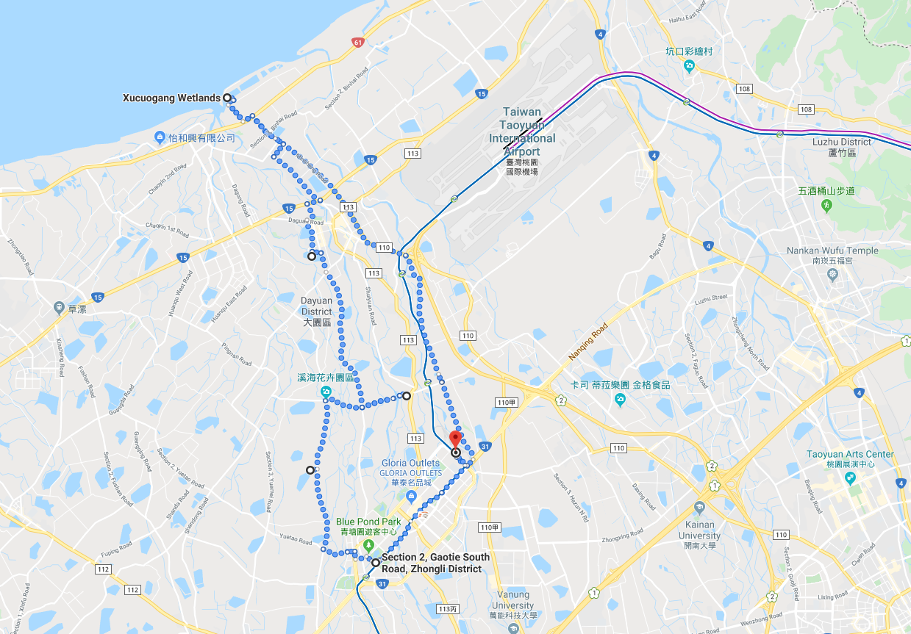▲ O型路線，拚一點也是可以用走的啦。
機捷A17領航站
領完各自的小折，簡單的變速教學，調整座椅高度、稍微試騎後就出發囉！台灣製造、單車界的神車BIRDY真是名不虛傳，打著抗風阻的名號，還真的蠻好騎的，擅長走路的我原本有點擔心會騎不動，踩出去的瞬間就對這趟旅程放下心。（腳踏車公司捨不得送我一台寫業配，哈哈，但真心認為是台灣生產的驕傲。）
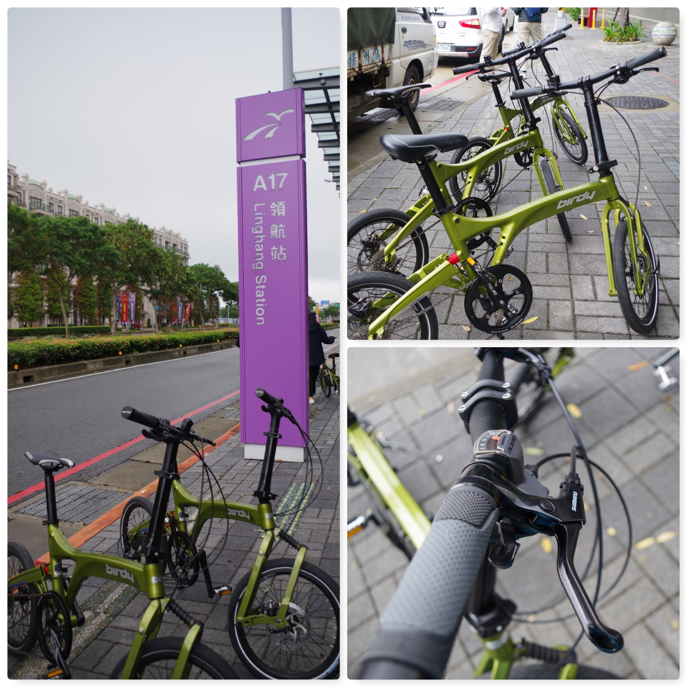▲ 陪伴我們的小折
青塘園
出發後騎個五分鐘就來到青塘園，這名稱可能大家不太熟悉，但講到桃園地景藝術節可能就有聽過或者去過。公園呈開放式，四面八方皆可進入，有著永恆之塔的青塘橋穿越公園中的埤塘，是以前灌溉用的水池。
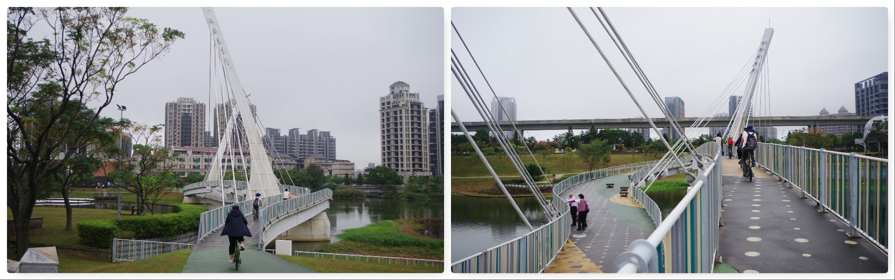▲ 青塘橋
裡面常駐的「桃機一號」是2018年地景藝術節的作品，外觀的造型吸睛，總是吸引大量的小朋友奔向它。沿著內部的階梯向上，有一些照片的展示，光線透過結構上的孔洞照入，替內部空間增添不少光影變化的美。
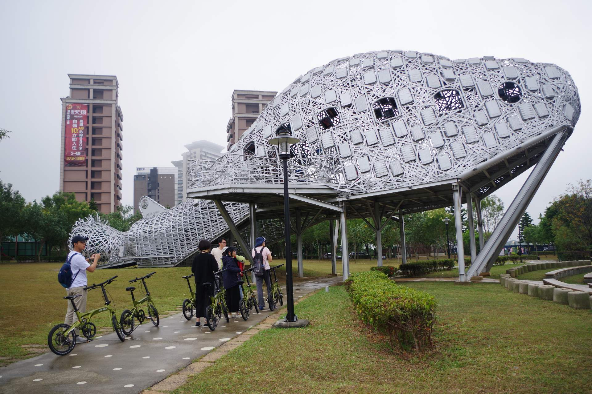▲ 桃機一號
領航路沿著機捷從A17-A19周遭有不少新的建案，是快速開發中的一個區段。路上佈滿台灣欒樹，前陣子結起燈籠狀粉紅色的蒴果為這條路增添色彩，現在轉為褐色說著冬意漸增。騎出高樓區，路邊開始出現飽滿的稻田，桃園的小路四季都有著不同的樣貌。
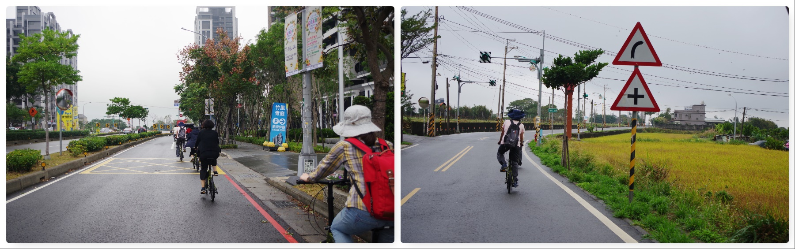▲ 路上風景
林園居休閒農場
很快地就到第二站，是個開發中的休閒農場，在這裡有一些體驗活動，可以畫斗笠，採果或種植，實際接觸田園中的植物，天冷會送上暖心的薑茶及小甜點，很適合親子踏青。
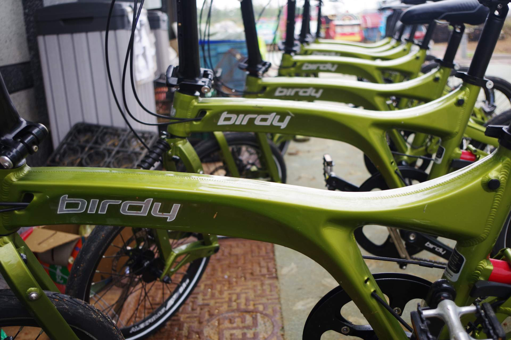▲ 門口停泊，數大之美。
拿到手的斗笠一片空白，有著自然的竹葉色彩，讓參與民眾各自發揮想像，大朋友小朋友都能做出自己風格的成品，在上面展示喜歡的內容，想起以前在紐西蘭的玩具工廠打工，強調創造力跟色彩，但出廠的玩具都是單純的木頭色，給小朋友顏料跟色筆去客製化自己的玩具，也是這樣的理念。
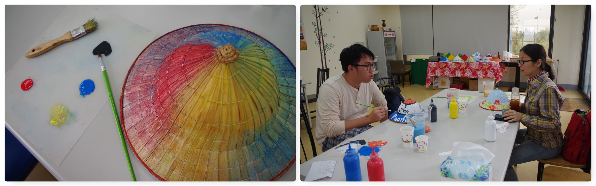▲ 各憑本事的斗笠創作
桃園屬於客家區塊，送上的茶點也充滿著客家風情，有湯圓跟米糕，主人熱情的招呼大家多吃點，小活動後都開胃了，甜甜的送入口，心情也得到撫慰。
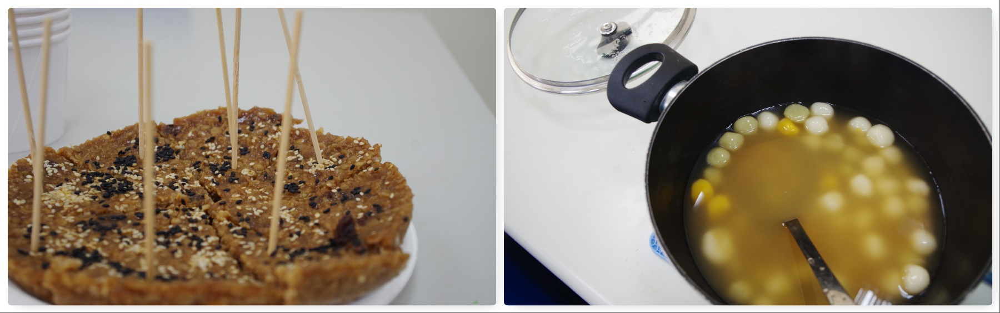▲ 甜入口
室內活動結束，外面廣大的農場空間當然不浪費，農場主人會看參與成員的狀態與季節來安排活動，可以種小盆栽也可以採果，還有控窯的場地，戴上手套，拿起剪刀，適逢洛神花季大家都獲得滿滿一袋的洛神。由於農場尚在開發中，導致踩進田裡鞋子的重量加N倍，因為被厚度直逼10公分的泥土包覆。在雨天中體驗了一般農地的常態，不僅見識到休閒農場的籌備過程，也比較貼近真實。
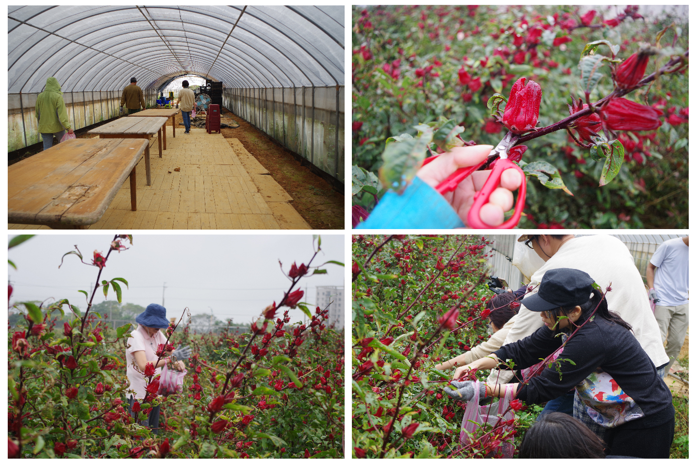▲ 前進洛神花田
林園居
電話：0933-716309
地址：桃園市大園區聖德北路1370 巷56號
小弘曆咖啡
一轉眼就到午餐時間，慢步調的時間溜得特別快，離開休閒農場來到庭園咖啡。小弘曆的佔地很廣，跟農場不 同的點是主要以盆栽為主，裡面種的多是香草植物，可以直接入菜。整體空間寬敞舒適。櫃子上擺著不小心被 敲出傷痕的盤子，以極低的價格出售。雖然不適合營業用，但可買回家自用。能讓物品盡到最大的利用價值， 就是對環境的友善。
若是天氣好外面也有很大的活動空間，有著遊樂器材跟散步區。平價的餐點相當大份量，整個套餐從沙拉、麵包、湯到飲料一樣也不少，顛覆精緻料理的想像，若是在大園區域活動要找個休憩飽食的點可以參考看看。
▲ 可以飽餐一頓的小弘曆咖啡
小弘曆咖啡
電話：03-3818947
地址：桃園市大園區中山南路二段56巷23號
吃飽喝足後是重點的開始！先到田寮埤放鬆看個飛機再去認識濕地。
華興埤
桃園早期因為氣候因素，為了灌溉挖出大大小小數千個埤塘，形成了在地景觀，雖然多半都為了建設填平，但留下的埤塘為城市加入一些柔和的元素，並有一些自然生態公園的產生。
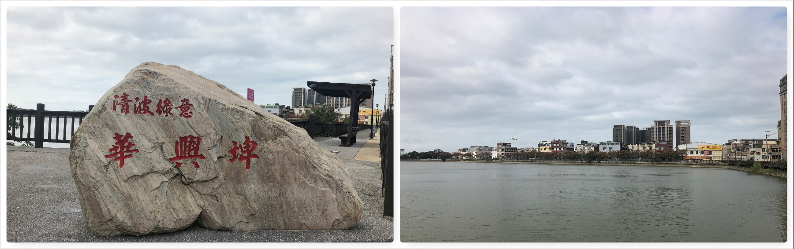▲ 桃園的埤塘文化
註：華興埤在當地人口中稱為田寮埤，特此註明。
華興埤周遭也有木棧道供人休閒散步，由於鄰近桃園國際機場，五分鐘內就會有一班飛機飛過，遠方聲響的逐漸靠近，壓得很低的飛機，很有臨場感，因此演變成一個看飛機的景點，活動當天雲層有點厚，飛機若隱若現的，比起能看到整個航線，那種不知道會從哪出現的驚喜別有一番樂趣。
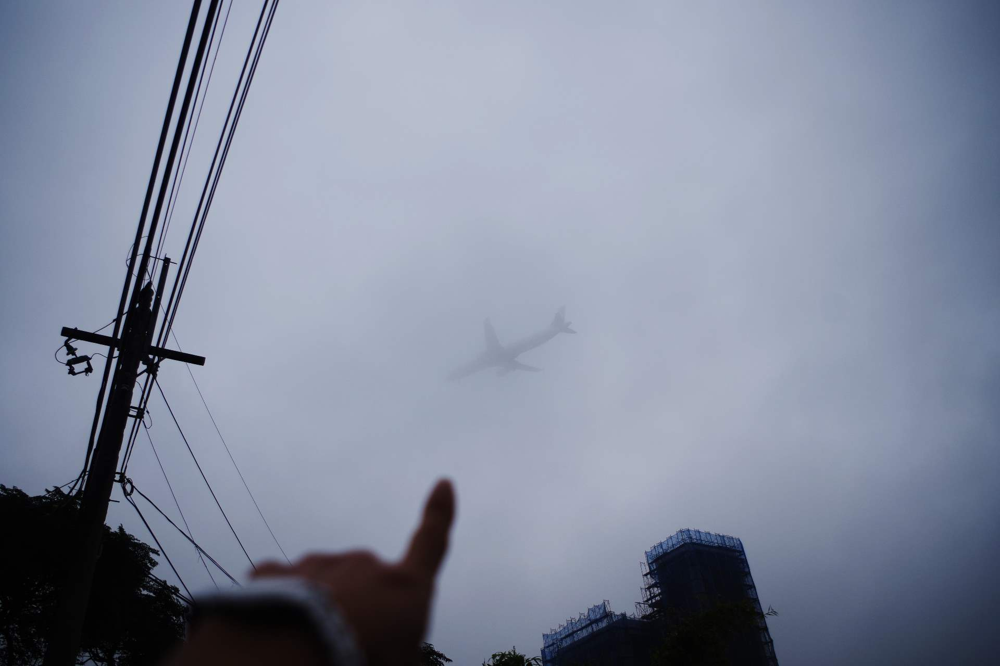▲ 雲層中的飛機
好天氣時可以看到飛機一步一步逼近。
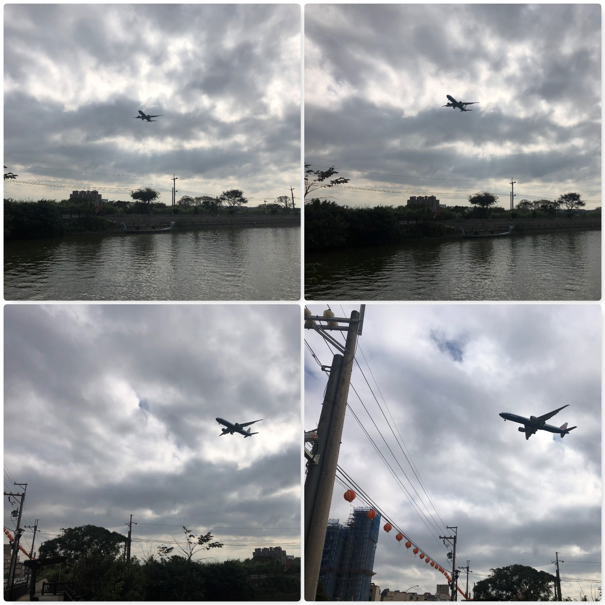▲ 飛機逼近航線全紀錄
許厝港重要濕地
台灣的濕地分為國際級、國家級與地方級三種級別，許厝港被列為國家級的重要濕地，整年下來包括留鳥及候鳥，可看到全台約1/3的鳥類，可說是相當豐富的區域。而濕地logo上的唐白鷺更是被列為保育類野生動物第二級的稀有鳥類，若是沒有頭後方的那撮毛常因為黃色的嘴被誤認為中白鷺，從黃色的腳可以做更明確的區分。
小知識補充
大白鷺及中白鷺都有著黃嘴黑腳，大白鷺長脖子的身形很容易被辨識，小白鷺的色彩則顛倒為黑嘴黃腳。
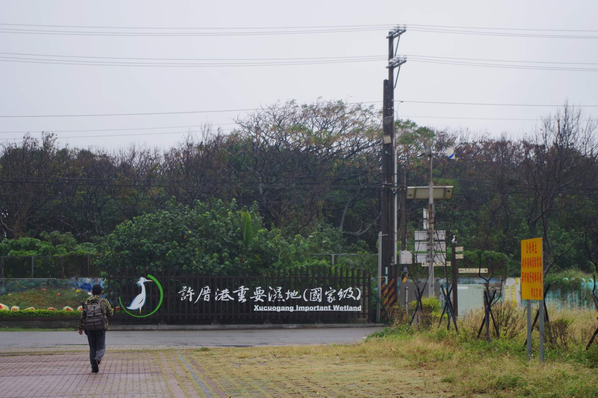
▲ 許厝港重要濕地的標示
圳頭里軍史公園
在台61線西濱快速道路高架橋下有著陸海空三軍退役武器的展示，這個圳頭里軍史公園是由圳頭里里長卓榮騰先生所規劃，卓里長本身有著軍事背景，因此搭配「一鄉一特色」的定位及「閒置空間再利用」的計畫提出了這樣一個場所。由於是許厝港濕地附近唯一有廁所的點，加上半遮蔽空間，常是生態導覽解說的起點。
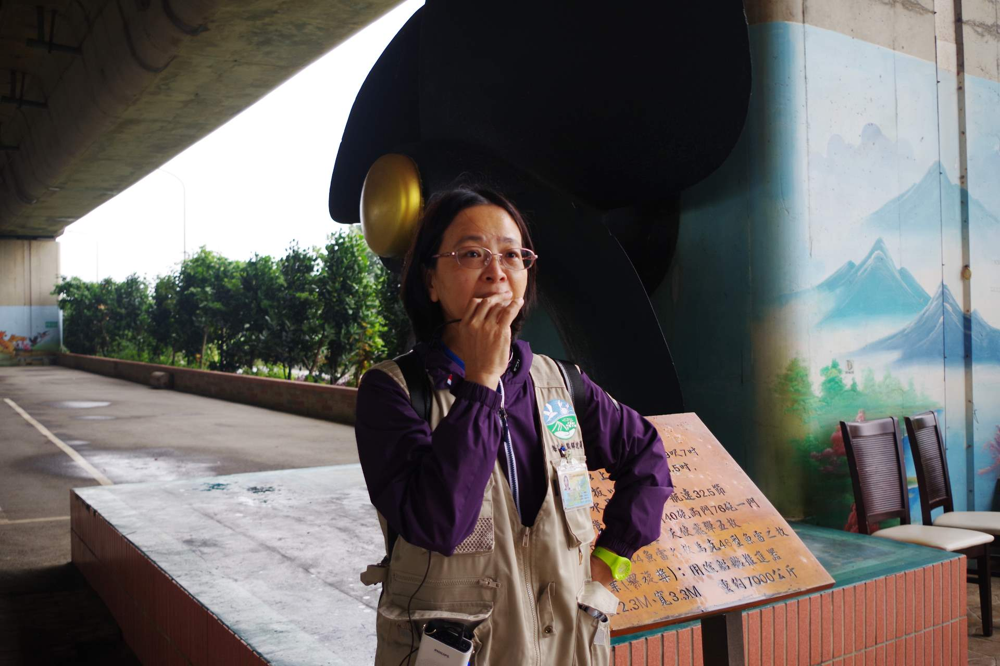▲ 導覽起始點-圳頭村軍史公園
紅樹林復育區
紅樹林分布於淡海水交界處，需要很特殊的生長環境才能存活，台灣的紅樹林有四種，分別為水筆仔、海茄苳、五梨跤、欖李等，五梨跤、欖李名列稀有植物，只在西南沿海能找到他們的蹤跡，在北部就只有水筆仔、海茄苳兩種，在許厝港這邊以水筆仔居多，海茄苳只有少量，可根據植株的型態與葉子輕易分辨。
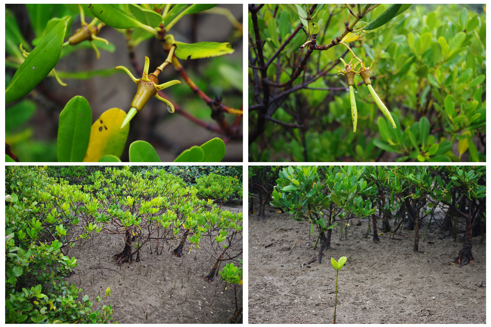▲ 水筆仔的不同時期
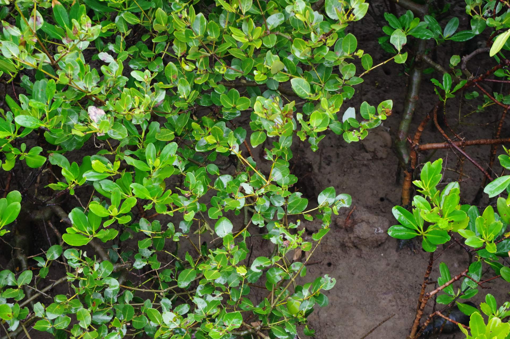▲ 葉子明顯不同的海茄苳
與紅樹林相伴的招潮蟹也是溼地區常見的生物，在許厝港濕地我們看到了三種蟹，滿布的白點是清白招潮蟹，台灣體型最大的弧邊招潮蟹則有著明顯的紅色大鰲，最後體型微大的紅螯螳臂蟹不是招潮蟹，加上有保護色不容易被看到，偶而會穿插現身。
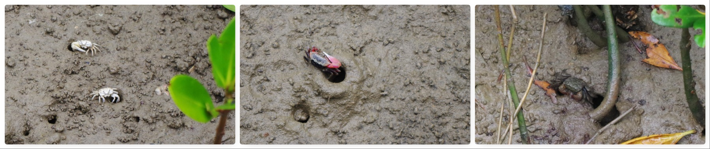▲ 伴隨紅樹林的蟹
看過招潮蟹不難聯想到彈塗魚，泥巴色的彈塗魚不時跳動引起注意，讓我們發現躲在泥地中的身影。
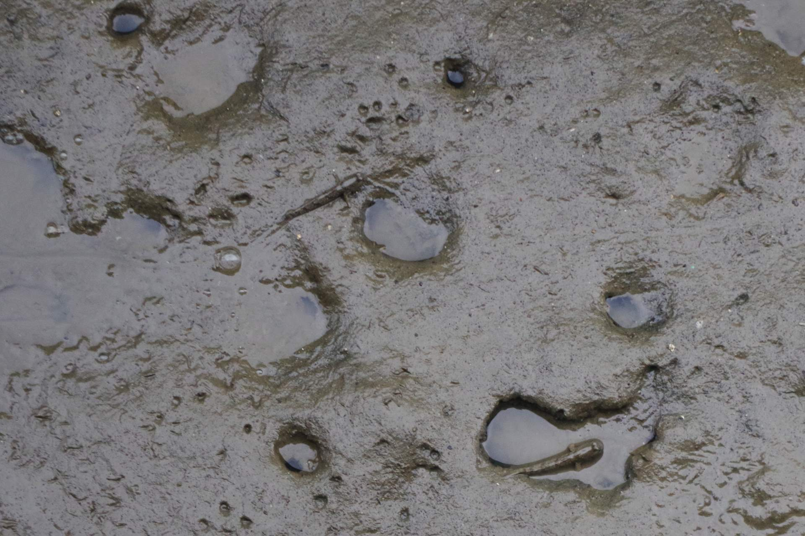▲ 躲在泥中的彈塗魚
生態導覽專線
單位：桃園市政府海岸管理工程處 生態保育科
電話：03-3865711分機310
許厝港海邊
濕地與海有著密不可分的關係，看完紅樹林復育區當然也要到海邊去走走。
海邊那些立起的木頭是鰻魚架，鰻魚卵孵化後，經過海洋潮流的漂送成長，經過半年多的時間才來到岸邊，再經過變態而成為捕捉的鰻苗，是高經濟價值的水產。架立起的網是捕鰻用的，有些隨著時間傾倒，慢慢的修復回過往的樣子，讓民眾能看到海邊的生活方式。這區域以前也是有石滬的，未來目標是結合大家的力量一起去重現，藉此也許能體驗石滬的堆砌技巧。
▲ 海岸邊的鰻魚架
由於氣候與時間的關係，許厝港濕地也是最後一個點，我們的腳踏車在此與我們揮別，為一天的行程畫下句點。此次行程，腳踏車騎乘總公里數為17公里，總騎乘時間約為90分鐘。想要前往的民眾，可先行評估自身體力喔！
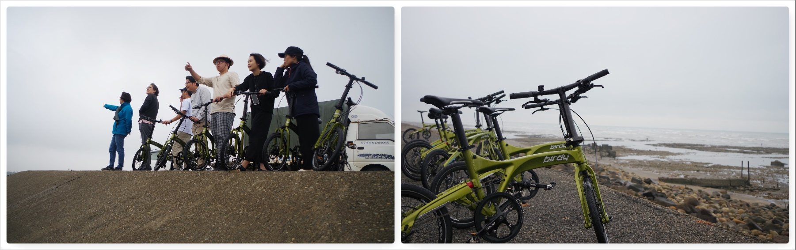▲ 揮別單車
濕地中隱藏很多鳥類，傍晚時分常會有大批的鳥突然飛起，不細看根本沒辦法發現這片海岸躲了這麼多的小動物。若有興趣還可以再往前推進，不遠處就有個賞鳥亭可以觀賞，不只是人，動物的歸巢時間也到了。
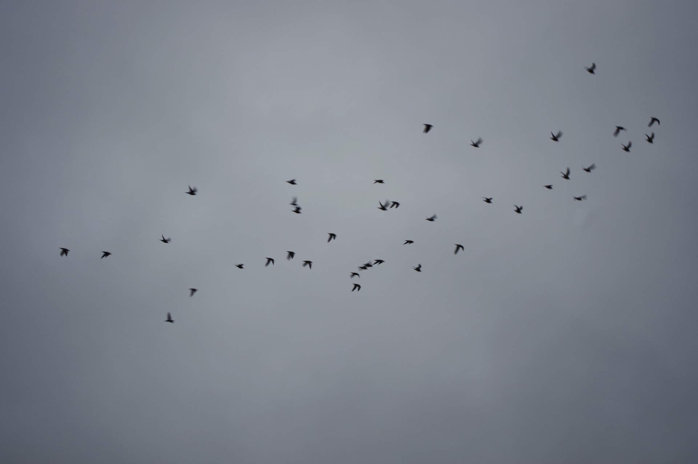▲ 歸巢
因為太過灰濛濛，特此感謝海管處提供海闊天空照，好天氣這邊的色彩可是很繽紛的喔！
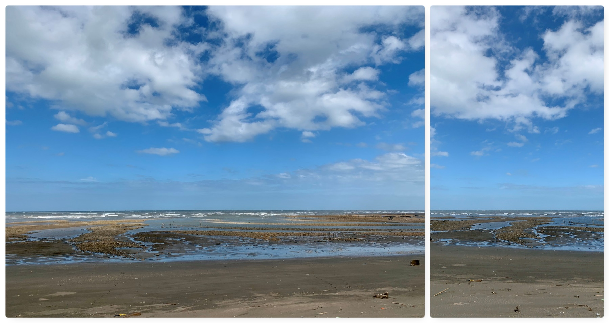▲ 好天氣的色彩／圖片提供:桃園市政府海岸管理工程處
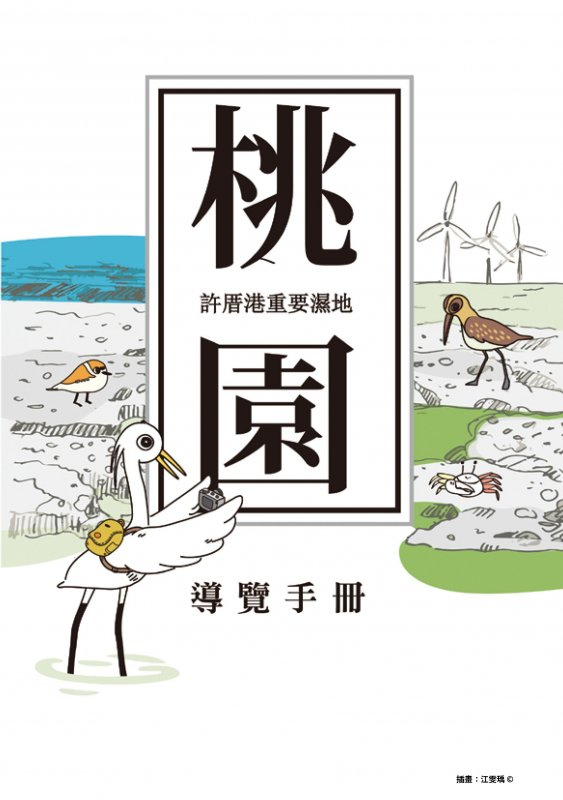▲ 可索取導覽手冊，知道更多當地生態知識／圖片提供:桃園市政府海岸管理工程處
小小後記
每個人都獲得一大袋洛神，已採下的洛神不宜久放，所以回家就要開始清洗去籽，這是太麻里品種的洛神，身上有不少細刺要小心，切開尾端後用不鏽鋼吸管輔助推出在裡面的籽，稍微燙一下冰鎮就可以跟糖交錯放進玻璃罐，就這樣出現兩瓶洛神果醬。 那些綠色的籽可以放到戶外曬乾，變黑以後可以再播種長出新的洛神喔。打到這裡，不禁打從內心覺得這篇文章的內容實在有點多元，可以圓滿收工了 : )
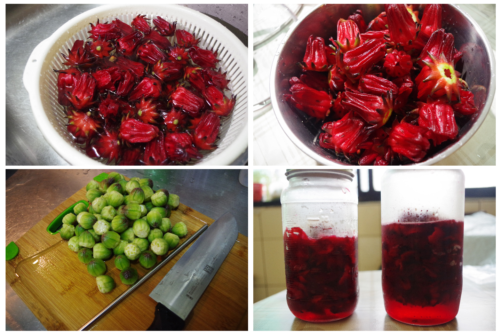本活動由桃園市政府海岸管理工程處與健行筆記共同推出